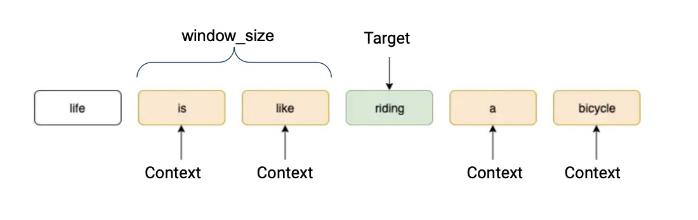
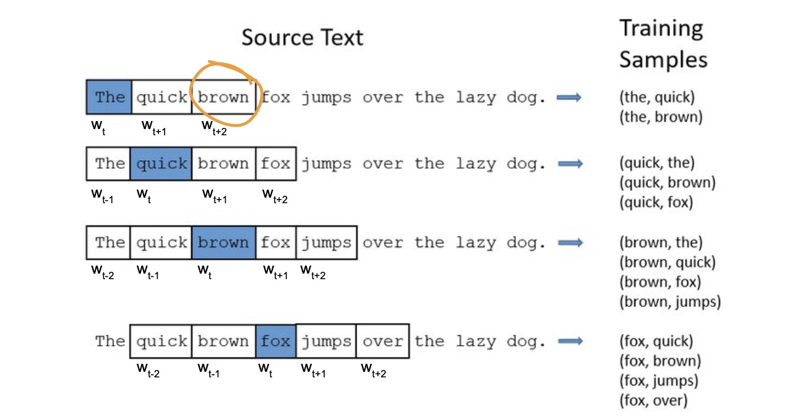

Word2Vec模型
Word2Vec模型
Word2Vec is a “family” of NN based algorithms to obtain embeddings:
- Architectures: Skip-gram and CBOW
- Training strategy: Negative Sampling and Hierarchical Softmax
Representing a sequence: 
- A context word is a word that is “window_size” away from a target word.
- In this example, window_size is 2. That means the context words are the 2 words preceding the target word, and the 2 words proceeding the target word.
- If “like” was our target word, then “life, is, riding, a” would be our context words.
Skip-gram
feed in target word as input, and the model aims to predict what the context words are.

Details

notations:
- V: the number of the Vocabulary
- N: the deminsion of the embedding
Process:
- Input X: 1-hot vector [1, V]
- the word (embedding) matrix W: every row/column on the word (embedding) matrix W' representing the context embedding of every word. [V,N]
- Target embedding h: X passes the word (embedding) matrix W. [1,N]
- Context (embedding) matrix 'W':
- y: Target embedding h multiply context (embedding) matrix. [1,V]
- Prediction: for every target word, we use the v_{target\_word} finding from the Target embedding h of word v to multiply the vectors of other words finding from the results after passing the Context (embedding) matrix 'W', then use the softmax to calculate to find the words having the highest prob (softmax(v_{target\_word}∙v_{context\_word i})).
使用滑动窗口技术来创建上下文词：
e.g.,: window_size(c) = 2

目标函数：
- 目标： 对整个训练语料库中的单词序列进行迭代，通过每个词的上下文窗口来最大化上下文词的最大化概率
- 目标函数: \frac{1}{𝑇}∑^{T}_{t=1}∑_{−𝑐≪𝑗≪𝑐,𝑗≠0}𝑙𝑜𝑔𝑃(𝑤_{𝑡+𝑗}|𝑤_{𝑡};𝜃), where 𝑃(𝑤_{𝑡+𝑗}𝑤_{𝑡})=\frac{exp(𝑣_{𝑤_{𝑡+𝑗}}𝑣_{𝑤_{𝑡}})}{∑^{𝑊}_{𝑖=1}exp(𝑣_{𝑤_{i}}𝑣_{𝑤_{𝑡}})}
- 𝑃(𝑤_{𝑡+𝑗}|𝑤_{𝑡}):给定当前单词𝑤_{𝑡}时，上下文单词𝑤_{𝑡+𝑗}出现的概率
CBOW
feed context words as input to the model, the model is then optimized to predict what the target word actually is.

Negative Sampling
原因: 当 vocabularies 和 embeddings 很大时,使用 SoftMax 计算会不方便，计算会很expensive
函数: 𝑙𝑜𝑔𝑃(𝐷=1|𝑤_{𝑡},𝑤_{𝑡+1})+𝑘𝔼_{\hat{c}𝑃_{𝑛𝑜𝑖𝑠𝑒}}[𝑙𝑜𝑔𝑃(𝐷=0|𝑤_{𝑡},𝑐)],对于每个真实上下文词，随机从整个Vocabulary中抽取k个负例进行训练.
举例: Use binary classification to distinguish real context words from noise context words
- 𝑃(𝐷=1|𝑤_{𝑡},𝑤_{𝑡+1})：binary logistic regression probability of seeing the word $𝑤_{𝑡} in the context $𝑤_{𝑡+1}
- 𝑃(𝐷=1|𝑤_{𝑡},𝑤_{𝑡+1})=\frac{1}{1+exp(−𝑣_{𝑡}𝑣_{𝑡+1})}
- 𝑃(𝐷=0|𝑤_{𝑡},𝑐)=𝟏−\frac{1}{1+exp(−𝑣_{𝑡}𝑣_{𝑐})}
=> 𝐿𝑜𝑠𝑠=−(𝑙𝑜𝑔𝑃(𝐷=1|𝑤_{𝑡},𝑤_{𝑡+1})+∑^{k}_{i=1}𝑃(𝐷=0|𝑤_{𝑡},𝑐_{i})